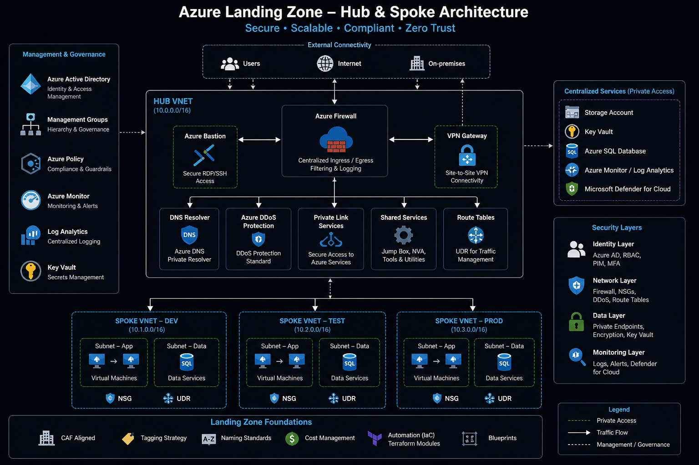

Azure Landing Zone (Terraform)
Designed and implemented a secure, scalable Azure landing zone using Terraform, aligned with enterprise best practices and Zero Trust principles.
Impact
- • Reduced cloud infrastructure costs by 30–50%
- • Achieved 100% infrastructure automation using Terraform
- • Eliminated critical security gaps through Zero Trust architecture
- • Improved deployment speed by 2–5x
Problem
Organizations required a secure, scalable cloud foundation to support mission-critical workloads,
but existing environments lacked standardization, automation, and proper security controls.
Solution
Designed a modular Azure landing zone using Terraform, implementing a hub-and-spoke network architecture
with centralized security controls and reusable infrastructure components.
- • Hub-spoke network architecture
- • Azure Firewall for centralized traffic inspection
- • Network Security Groups (NSGs) for segmentation
- • Private endpoints for secure service access
- • Terraform modules for reusable deployments
Architecture

The architecture follows a hub-and-spoke model, where all traffic is routed through a centralized
firewall, ensuring security, control, and visibility across workloads.
Tech Stack
Azure
Terraform
Networking
Security
Zero Trust
Key Takeaways
- • Importance of modular infrastructure design
- • Security must be embedded at every layer
- • Automation significantly improves consistency and speed